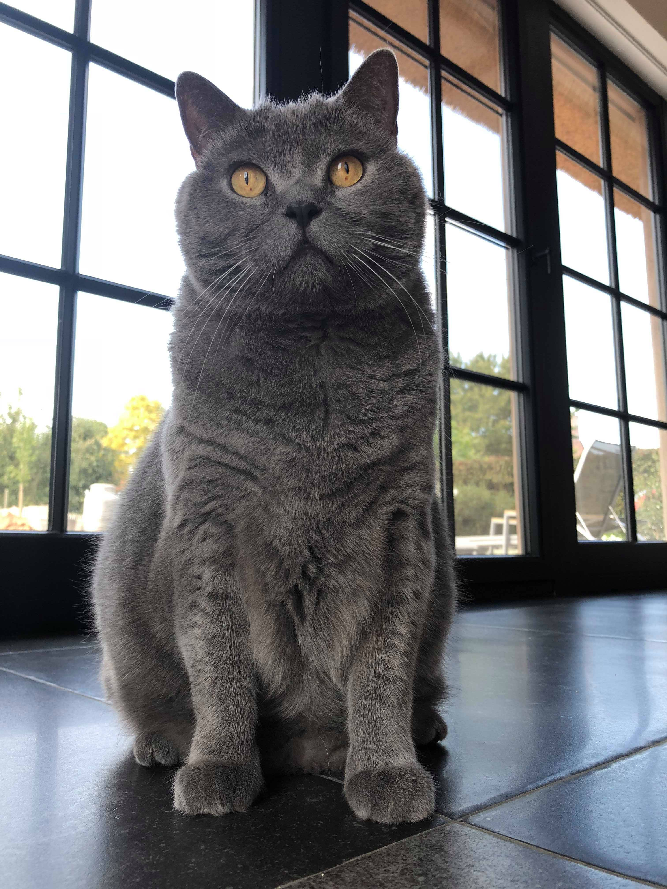
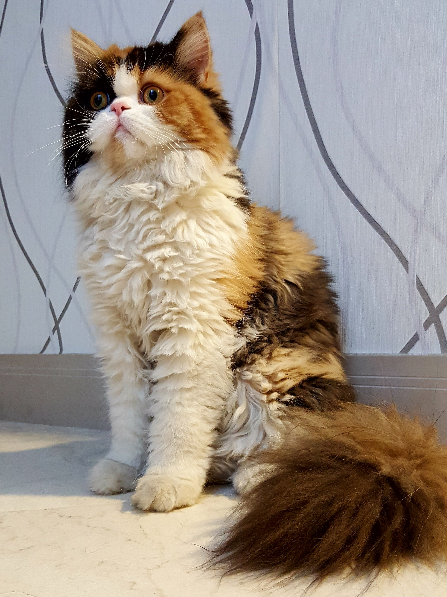

Gatos Fantásticos
-

-

-

- 
-

- 
Siamês
Gato siamês é uma raça de gato oriental, caracterizada por um corpo elegante e esguio e uma cabeça marcadamente triangular. Pode ser confundido com a raça de gatos Thai que tem origem na raça siamesa mas apresenta uma morfologia bem distinta — O gato Thai é semelhante ao siamês antigo.
Originário da Tailândia, antigo Sião, os gatos siameses são aconselháveis para famílias. Os siameses modernos são tipicamente esbeltos, com cabeça triangular e orelhas grandes, e são precisos poucos cuidados com sua pelagem.
As características mais marcantes são as zonas de coloração mais escura, que cobrem a face, orelhas, pernas, patas, cauda e no saco escrotal (no caso de ser um macho). Essas zonas, também chamadas de "pontas", "marcações", "marcas" ou "sinais" e são identificadas com o termo inglês adotado universalmente: points ou colourpoints. A cor do point contrasta com a do resto do corpo que é branco ou sombreado.
As cores mais escuras resultam de uma mutação numa enzima, a tirosinase, envolvida na produção de melanina. Esta enzima mutada é sensível à temperatura, o que quer dizer que só é ativa nas zonas mais frias (por norma as extremidades) ficando essas áreas escuras porque só é produzida a melanina nessas regiões. Mais recentemente têm sido apresentadas outras variações.
ele se comporta mais como um cão do que como um gato - pode passear atado numa coleira e chega a exibir o comportamento típico de "ir buscar". É fiel, ciumento e altamente inteligente, ademais gosta de ser acariciado, especialmente na zona do pescoço. Como todo gato, ele, às vezes, pode agir de modo incomum, em um instante é capaz de passar da maior frieza às mais vibrantes expressões de afeto.
Maine Coon
Maine Coon é uma raça de gato originária do nordeste dos Estados Unidos. É considerada a raça de pelo mais antiga, além de ser a maior de todas as raças de gato do mundo. Foi reconhecida como raça oficial no estado norte-americano do Maine, onde era famoso pela sua capacidade de caçar ratos e tolerar climas rigorosos. Também é conhecido como "o gigante gentil".
O Maine Coon é extremamente dócil, meigo e companheiro, dando-se bem com outros gatos e outros animais de estimação, como o cão. É um gato de fácil adaptação e essencialmente muito amigável. Carente de cuidados e atenção, necessita sempre de companhia. Seu miado é um dos mais curiosos, por ser semelhante a um grilo.
Maine Coons são uma das maiores raças de gato doméstico. Os machos pesam de 6 a 11 kg com fêmeas pesando de 4,5 a 6,8 kg. A altura de adultos pode variar entre 25 e 41 cm e atingir um comprimento de até 100 cm, incluindo a cauda, que por sua vez atinge um comprimento de 36 cm e é longa, afunilada e com muito pelo, quase semelhante a uma cauda de guaxinim. O corpo é sólido e musculoso, necessário para suportar seu próprio peso, e o peito é amplo. Maine Coons possuem uma forma do corpo retangular e demoram a amadurecer fisicamente; seu tamanho total potencial normalmente não é alcançado até que eles tenham de três a cinco anos de idade, enquanto outros gatos levam cerca de apenas um ano. Originalmente um gato de trabalho, o Maine Coon é resistente, rústico, capaz de suportar fortes condições climáticas. Seu pelo é macio e seu corpo muito bem proporcionado, de aparência retangular e balanceada, sem partes exageradas em tamanho. É musculoso, de tamanho médio para grande. As fêmeas geralmente são menores que os machos.
Sphynx
Sphynx, ou gato pelado canadense, é uma raça de gatos originária do Canadá, e que é conhecida por não possuir pelos. O gene responsável pela sua nudez é a alopécia hereditária e é recessivo.
Quem os vê pela primeira vez chega a assustar, pois o padrão de felinos (gatinhos) que as pessoas tem não condiz com o visual que os Sphynx apresentam, o Sphynx é um gato de corpo musculado de aparência fina mas de ossatura forte. Por não possuir pelos, essa raça é muito procurada por pessoas desinformadas que acham que pelos provocam alergia, quando na realidade o fator causador encontra-se nas descamações da pele dos animais. Portanto, deve-se deixar claro que esta raça não é hipoalergênica.
O Sphynx é um gato muito afetuoso até possessivo, muito agarrado ao seu dono, gosta muito de ser mimado. É um gato vivo sociável, muito inteligente, enérgico, muito brincalhão e raramente agressivo. Quando o dono chega a casa procura imediatamente a sua companhia e recebe-o com grandes demonstrações de carinho e muita brincadeira. A ausência de bigodes, os tornam muito desajeitados as vezes não conseguindo subir em lugares altos, desequilibrando facilmente.
O Sphynx, como todos os gatos, é capaz de fazer a sua própria higiene, mas devido às suas características necessita de alguns cuidados extras para a sua higiene. Como a sua pele por falta de pêlo não elimina a gordura, deve ser limpo com um pouco de leite de toillete para bebê, toalhetes sem álcool ou lenços umedecidos, uma vez por semana. Deve-se observar que loções adstringentes limpam de fato a oleosidade da pele mas sem o devido cuidado pode haver o ressecamento da pele do animal gerando uma escamação anormal ou em casos mais graves até feridas. Banho, uma vez por mês com um xampu neutro. Este procedimento além de tonificar e facilitar a circulação evita problemas de pele (dermatoses). Cuidado com o sol direto pois a sua pele como é nua bronzeia com muita facilidade podendo ocorrer queimaduras solares. Alguns criadores passam protetor solar nos animais mas, como os protetores são em sua maioria gordurosos, a oleosidade da pele pode aumentar visivelmente multiplicando exponencialmente os cuidados. Os canais lacrimais devem ser limpos com uma loção (Optrex) ou soro fisiológico, pois produzem uma geleia acastanhada. Orelhas, devem ser limpas uma vez por semana pois criam um cerùmen castanho, usa-se normalmente Otoclean que ajuda a evitar problemas com otites. Limpar também as patas assim como as almofadas retirando corpos estranhos.
Chartreux
O gato Chartreux, também chamado cartuxo em português, conhecido pelo seu sorriso enternecedor, é um gato silencioso e discreto, menos falador que a maioria dos felinos, mas muito ronronante, sendo que raras vezes se ouve miar. Aliás, quando o faz e se espera um miar forte, apenas se ouve um som minúsculo e delicado. Bastante calmo e extremamente tolerante, é muitíssimo dedicado e apegado à sua família, demonstrando um enorme carinho e simpatia. É também sociável, simpático e adapta-se rapidamente às mudanças. É um gato que necessita de muito espaço para se exercitar, pois adora correr pela casa sempre na brincadeira com o seu dono ou com um simples brinquedo. Para ele, um pouco de exercício frenético a um ritmo alucinante, pelo menos uma vez por dia é mais do que suficiente para se sentir o gato mais feliz e alegre do mundo. Adora naturalmente, chamar a atenção e ser acariciado mas não gosta de se sentir preso. O seu pêlo curto, fofo e lanudo é muito macio. A cor é cinza-azulada e pode variar entre cinzento mais claro ou mais escuro, sendo que deve ser uniforme desde a raiz. O brilho do pêlo é percebido através das pontas prateadas, mas não deve apanhar muito sol, pois pode ficar com reflexos acastanhados, o que não é aconselhável. Com um corpo forte, robusto e porém musculoso, o Chartreux é um gato extraordinário.
O Chartreux é um gato dócil, afectuoso, amável, brincalhão, com uma forte personalidade e muito independente. Com o seu olhar doce e pêlo lanudo, cativa qualquer um logo no primeiro instante. Apresenta algumas qualidades típicas de um cão, seguindo o seu dono para onde quer que ele vá e acompanhando-o nos momentos mais alegres e nos mais tristes, também. Demonstra, assim a sua enorme devoção e carinho, podendo ressentir-se bastante numa ausência prolongada do dono. É um amigo fiel e um óptimo guardião. Apesar da sua aparência calma é dotado de uma extrema inteligência e não dispensa uma bela caçada. É muito silencioso e sensível, pois não gosta de demonstrar os seus sentimentos e raras vezes se ouve miar. É o gato menos falador de todas as raças, mas em contrapartida, contempla-nos com os seus eternos e constantes ronrons. É por isso conhecido como o gato ronronante. Demonstra grande afectividade pelo seu dono, manifestando a sua felicidade e alegria. Mas, cuidado. É um gato que prefere sofrer em silêncio e por isso o seu dono deve estar sempre atento.
O Chartreux é um gato de pêlo curto e grosso, que requer pouca manutenção, mas é necessária alguma atenção para que a sua apresentação seja exemplar, pelo que: deve escovar-se pelo menos uma vez por semana, o que para além retirar os pêlos mortos, contribui ainda para uma uniformização da cor do manto do seu gato e evita a formação de bolas de pêlo no estômago. As suas orelhas requerem especial atenção, pois têm uma segregação auricular maior do que a maioria dos gatos. É aconselhável que as orelhas sejam limpas uma vez por semana, primeiro com lenços úmidos e depois com um cotonete. A alimentação varia de acordo com as fases de vida de um gato. Quando este é jovem, necessita de um suplemento proteico encontrado em rações de boa qualidade para gatinhos.
Ashera
Ashera é um animal de caráter híbrido felino criado pela empresa "Lifestyle Pets" do ramo de biotecnologia.
Mistura de serval, gato-leopardo e gato doméstico, o Ashera é um animal exótico, raro. Pode chegar até aos 15 kg. Sociáveis, totalmente domesticáveis, muito inteligentes, se dão bem com adultos e crianças, como todo gato de estimação exige cuidados básicos (contando que tenha o conforto), acontece que muitos donos os mimam mais que o normal, julgando pelo preço alto do animal que é vendido por US$ 22 mil dólares, alguns como o Ashera GD (antialérgico) custam até US$ 28 mil dólares.
A autenticidade desse animal foi contestada pois exames de DNA mostraram-no igual à raça Savanah, uma cruza já existente entre gatos domésticos e leopardos asiáticos.
Persa
Persa é uma raça de gato doméstico originária do Irã, antiga Pérsia. É conhecido por sua aparência chamativa, de muita pelagem e focinho achatado.
As origens desta datam desce o inicio do século XVII, onde o explorador italiano Pietro Della Valle, durante uma de suas viagens pela Ásia, passou pela Pérsia, atual Irã e, trouxe consigo alguns dos exemplares de gatos que habitavam as ruas locais. Quando voltou à Itália, imediatamente, os gatos ganharam popularidade entre as pessoas, devido a sua pelagem macia e brilhante. Porém, a raça moderna persa surgiu somente no século XIX, quando os gatos criados na Itália foram levados a Inglaterra, onde foram feitos cruzamentos com gatos da raça angorá. Logo em seguida, foi feito um trabalho de melhoramento genético, visando se obter maior variedade de cores e padrões de pelagem. Atualmente, há mais de 100 diferentes combinações de cores para gatos desta raça, variando desde o branco neve, até o malhado.
O exemplo de um gato persa na ficção conhecido é o Garfield, personagem da série de histórias em quadrinhos, desenhos animados e filmes. Outro exemplo conhecido nos filmes é o gato Snowbell, da série de filmes Stuart Little, Mr. Tinkles dos filmes Como Cães e Gatos 1 e 2, o Bichento gato da personagem Hermione Granger na série de livros e filmes Harry Potter. A personagem icônica dos filmes de James Bond 007, simplesmente conhecido como Number 1, uma posição numérica de ranking atribuída a membros da organização SPECTRE, Ernst Stavro Bloveld, protagonizada por Donald Pleasence, Telly Savalas, Charles Gray, Max von Sydow e Christoph Waltz, entre outros, foi concebida especialmente e com um destaque para a filmagem de um close-up do ator a acariciar o seu gato persa branco de olhos azuis, em deterimento da focagem da cara do próprio Blofeld. A aparência do popular gato persa branco, tem a sua estreia nos filmes de From Russia with Love 1963 e Thunderball de 1965.
FAQ
- Quem é este gato Siamês lindo da foto?
- Este lindo gato é pertencente ao criador desta página, atualmente ele possui em torno de um ano e alguns meses. O Sushi (nome dele) é um gato muito brincalhão, carinhoso e atentado, ele é um gato muito inteligente e sabe fazer muitas coisas, como por exemplo, me morder e destruir fios.
- Por que eles são fantásticos?
- felinos conseguem escutar até três vezes mais que os seres humanos, fora que eles têm a capacidade de escutar sons que nós não conseguimos detectar, como por exemplo o som de algumas presas.
- Eles são inteligentes?
- Os gatos são altamente inteligentes, intuitivos e treináveis. Se você parar pra observá-los, por um curto período de tempo, já é possível reconhecer que eles são seres extremamente inteligentes.
- Como proteger?
- Você pode proteger seu gato de diversos perigos, como por exemplo, deixar ele dentro de casa, ou em um local seguro, e também pode proteger seu gato de doenças, como por exemplo, vacinando ele.
Expectativa de vida
Contato
- cpjeanberg@gmail.com
- (016) 3209-7609
- Av. Benjamin Constant, 1470 - Sorocabano, Jaboticabal - SP, 14871-090
- São Paulo - Jaboticabal
- Segunda á Sabádo - 8:00 às 18:00